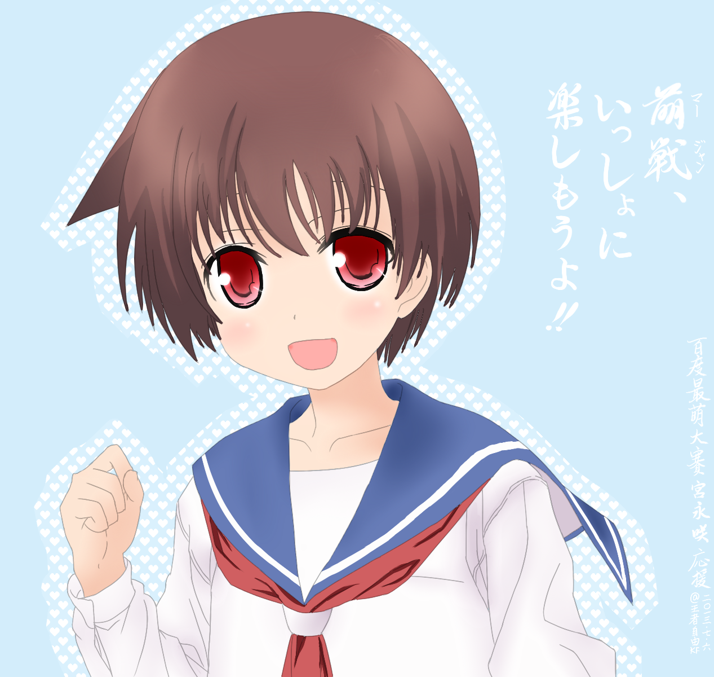

萌战
文 @王者自由
萌战源于日本，正如ACG文化源于日本一样。所谓萌战，就是日本动画最萌大赛，是各类萌战的起源。直至今天，提起“萌战”我们主要指的是日萌。然而后期出现的“韩萌”“中萌”乃至“世萌”各有特色，也属于萌战。
日萌（アニメ最萌トーナメント）
日萌2013官网（日语）：(http://acst13.saimoe.me/)
日萌2002年起源于2ch叶键版（类似于百度贴吧），首届萌王是木之本樱＠魔卡少女樱。投票方式为code制，领取code之后回复帖子，可以实时看到别人的投票，随时掌握比赛进程。所以每次比赛都会有大量人观战，主要的观战场是百度萌战吧的直播楼。
日萌的赛制简单粗暴，进行速度快，比赛激烈，是其受人关注的原因之一。萌战的看点其一在于“萌”，角色的萌度决定了其战斗力，使得无数宅男竞折腰；其二在于“战”，投票者大多结成联盟，称为“阵营”，为了自己的目的无所不用其极，伪票、隐票、多重票战术使得赛场硝烟四起，激烈程度不亚于一场世界战争，令人着迷。
虽然当初有《最萌三原则》，但是由于萌战的形式导致了阵营和“厨”的出现，这些原则似乎只是笑柄了。有人说，“萌战”即“厨战”，一点不假。然而毕竟有如此多的人醉心于此，也正是这种勾心斗角、争斗厮杀的魅力所在。即使身在海外（相对于日本而言，也就是说中国就是海外）不能投票，也乐于看着大厨们你争我抢的精彩战斗。
★最萌三原则
- 萌有千差万别，各人都有自己的萌
- 不能因为自己的萌而去刻意否认他人的萌
- 赌上荣耀，为自己的萌投上干净的一票
历代萌王和准萌
- 2002年 木之本樱（魔卡少女樱） 春日步（阿兹漫画大王）
- 2003年 原田梨红（天使怪盗） 原素子（高机动幻想 GPM）
- 2004年 罗兹玛莉（明日的娜嘉） 娜嘉（明日的娜嘉）
- 2005年 高町奈叶（魔法少女奈叶） 苍星石（蔷薇少女）
- 2006年 翠星石（蔷薇少女 梦见） 菲特·泰斯特罗莎（魔法少女奈叶 A's）
- 2007年 古手梨花（寒蝉鸣泣之时） 三千院凪（旋风管家）
- 2008年 柊镜（幸运星） 柊司（幸运星）
- 2009年 逢坂大河（龙与虎） 平泽唯（轻音少女）
- 2010年 中野梓（轻音少女2） 三千院凪（旋风管家2）
- 2011年 巴麻美（魔法少女小圆） 佐仓杏子（魔法少女小圆）
- 2012年 园城寺怜（天才麻将少女 阿知贺篇） 松实玄（天才麻将少女 阿知贺篇）
- 2013年 鹿目圆（剧场版 魔法少女小圆） 美树沙耶香（剧场版 魔法少女小圆）
世萌（International Saimoe League）
世萌官网（英语）：(http://www.internationalsaimoe.com/)
国际最萌大会（简称：世萌；英文：International Saimoe League，ISML)，为Minhtam创办的国际性萌战，每年举办一次。2008年，首届国际最萌大会冠军为菲特·泰斯特罗莎·哈拉温＠魔法少女奈叶。2013年，第六届国际最萌大会冠军为五更琉璃＠我的妹妹不可能这么可爱，亚军是天使（立华奏）＠Angle Beats!。
世萌比赛途中无法看到实际战况，故不存在伪票之说。多重票也会在比赛后由运营裁决去除。相比日萌而言，世萌没有厨战，相对比较无聊。但是由于参赛人数多，投票面积广，世界各地的人都能投票，似乎比日萌更为知名。
其他萌战
电玩巴士在2007年举办首届《中国最萌大会》，由于某些原因只开办了三届，死于2009年。
《动漫FANS最萌》，简称“DM萌”，开办于动漫FANS论坛，自中萌停办以来是目前国内规模最大最具代表性的萌战活动之一，始于2008开始。今年萌王是拉克丝·克莱茵＠机动战士高达seed 重置版，亚军小鸟游六花＠中二病也要谈恋爱！。
《百合会最萌世界杯》，又称“300萌”，自2006年开始，每年于百合会论坛举办的活动。2013年的比赛目前正在举行中……
2010年开始，百度贴吧（主要是萌战吧，赛场在最萌大赛吧）自发组织最萌比赛，又称“度萌”。今年2013年的优胜是宫永咲＠天才麻将少女阿知贺篇 episode of side-A，准优胜是小鸟游六花＠中二病也要谈恋爱。
 PS: 小编为了度萌决赛还专门画了这张应援图，从此成为了我的新头像。度萌无官方图，就用这张代替了。
另外还有百度世萌吧举办的“新星萌”、萌战吧年初举办的“best歌赏”、“最萌战队联赛”等。
燃战
萌战的角色都是女性，显然是男性向的。而女性向的燃战也应运而生。在日语中，“萌”“燃”同音{もえ(moe)}，
今年的度燃燃王是不二周助＠网球王子。日燃仍无结果，世燃（世萌表演赛）也正在进行中……